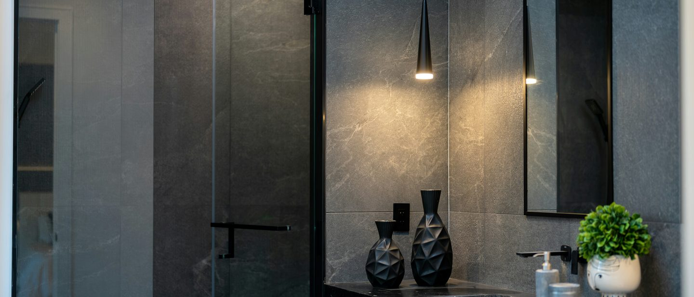
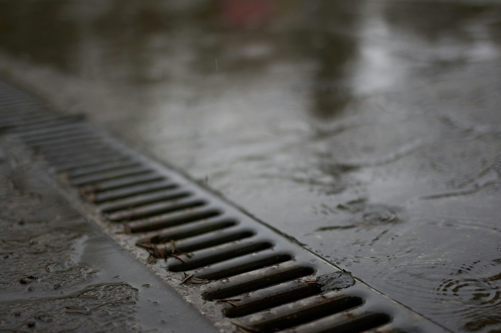

Waterproofing is the job. Tiling is the finish.
As approved Schlüter contractors we install the tanking system as a continuous layer, sealed at every junction and penetration, before any tile goes down.

Tile and grout are not waterproof.
This is the single most misunderstood thing about a wet room.
Tile is impervious; grout is not, and neither is the substrate behind it. Water finds the joints, then the fixings, then the timber or plasterboard underneath.
A tanking system is a waterproof membrane bonded to the walls and floor before tiling. It is what actually keeps water in the room. The tile is the surface you see; the tanking is the part that decides whether the ceiling below stays dry.
In a level-access wet room it is not optional. In any tiled shower enclosure it is strongly advisable, and it is what separates a specialist installation from a general one.
What we install.
Level-access wet rooms
Formed and falled substrate, linear or centre drainage, fully tanked walls and floor, threshold detail resolved with the adjoining finish.
Tanked shower enclosures
Membrane to the wet zone and beyond it, sealed at every corner, penetration and niche return before tiling begins.
Bathrooms
Full wall and floor tiling, large-format or mosaic, with movement joints and silicone detailing designed in rather than added at the end.
Niches & recesses
Prefabricated or formed niches, tanked as part of the continuous layer, set out so the tile module lands cleanly on the returns.
Underfloor heating build-ups
Uncoupling and heating layers specified with the right adhesive and commissioning sequence, so the floor is not heated before the adhesive has cured.
Commercial washrooms
Changing rooms, pool surrounds and washrooms where slip resistance and drainage falls are specified, not assumed.

What sits behind the tile.
Every wet room we build is a sequence, and skipping any layer shortens the life of the one above it.
- 01Substrate checked, levelled and falls formed
- 02Uncoupling or backer board where movement is expected
- 03Tanking membrane bonded, corners and penetrations banded
- 04Drain and upstand sealed into the membrane
- 05Tile fixed with the adhesive the system specifies
- 06Movement joints and silicone at every change of plane
Wet rooms we have built.
Wet rooms and tanking.
Do I really need tanking, or is a waterproof board enough?
Waterproof boards resist water but the joints between them, and every screw fixing through them, are not sealed on their own. A tanking system bonds over the boards and bands every joint and penetration, which is what makes the surface continuous.
Can you form a level-access wet room on a timber floor?
Usually yes, but it depends on joist depth and whether the floor can be recessed to take the drain and falls. It is one of the first things we check on the survey, because it affects both the build-up and the cost.
How long does a wet room take?
It varies with size, substrate condition and material lead times, and the membrane and adhesive each need proper curing time before the next stage. We give a programme with the quote rather than a general figure.
Do you work from an architect’s or designer’s drawings?
Yes. We work to the drawing and raise setting-out queries early: tile module against room dimensions, where cuts land, and how thresholds meet adjoining finishes.